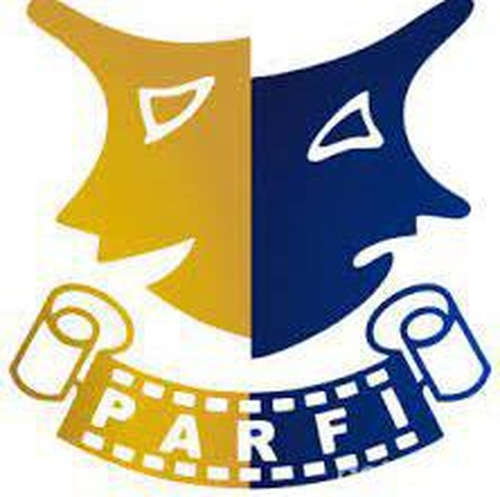

Profesional
Berintegritas, kompeten, dan bertanggung jawab.

PARFIJAWA TIMUR Website saat ini ↗PERSATUAN ARTIS FILM INDONESIA · JAWA TIMUR
Rumah bersama bagi insan perfilman Jawa Timur untuk berkarya, berkolaborasi, dan membawa cerita daerah ke layar yang lebih luas.
RUANG UNTUK INSAN FILM
SAMBUTAN KETUA
PARFI Jawa Timur berkomitmen menjadi organisasi yang profesional, solid, inovatif, dan berintegritas. Kami membuka ruang bagi anggota, komunitas, rumah produksi, akademisi, dan seluruh mitra untuk bertumbuh bersama.
Terhubung dengan PARFI ↗NILAI ORGANISASI
Berintegritas, kompeten, dan bertanggung jawab.
Mendorong ide dan karya yang berkualitas.
Bersinergi untuk ekosistem perfilman yang sehat.
KABAR TERBARU
Digitalisasi anggota, penguatan pengurus cabang, pendidikan, produksi, dan distribusi karya menjadi arah kerja organisasi.
Pengurus daerah dan cabang menyatukan visi untuk mengembangkan cerita lokal Jawa Timur.
AGENDA PARFI